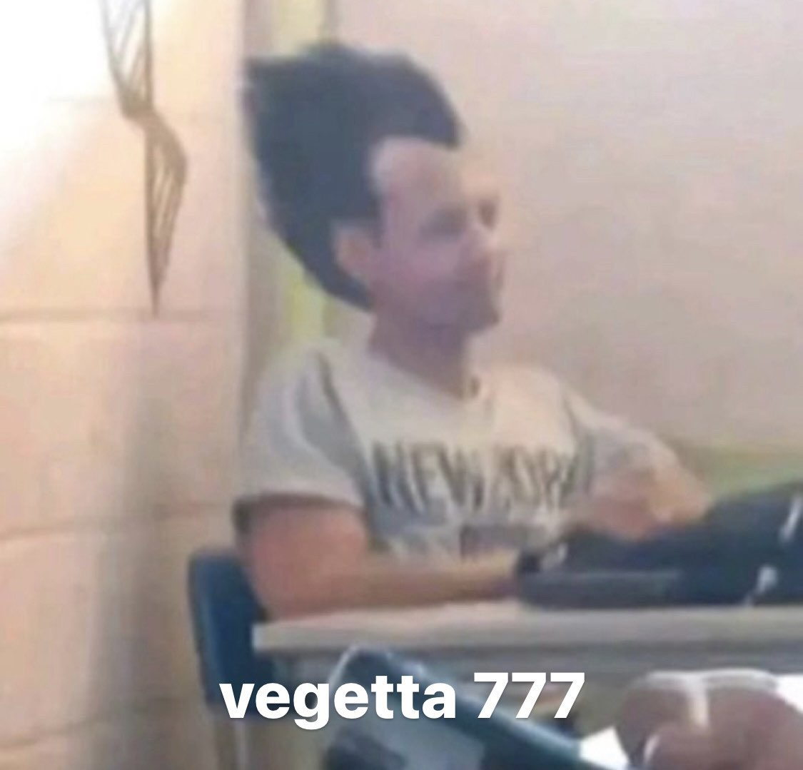

Benvinguda
Iván Díaz Martínez
Hola,mi nombre es Iván, tengo 18 años y soy estudiante de DAW.
Mis aficiones
Mis hobbies son jugar a el videojuego League of legends y ver futbol.
League of Legends es un juego altamente competitivo y estratégico, lo que lo hace emocionante y desafiante. Permite a los jugadores demostrar sus habilidades, trabajar en equipo y desarrollar estrategias complejas. El sentido de logro cuando se gana una partida después de un duro enfrentamiento es inmenso. Además, el juego cuenta con una gran variedad de campeones y roles, lo que te permite experimentar y encontrar el personaje que mejor se adapta a tu estilo de juego. La comunidad y las competiciones eSports también son aspectos importantes, ya que permiten conectar con otros jugadores y seguir a los equipos y jugadores profesionales en torneos emocionantes.